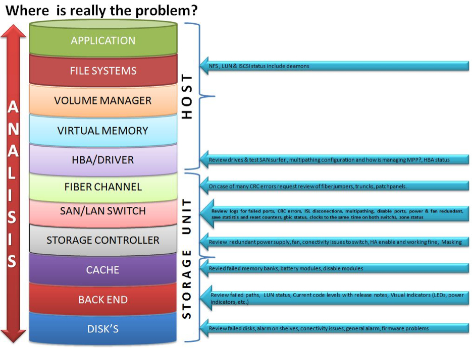

SAN Troubleshooting Netapp Storage
SAN Troubleshooting
A couple of years a go, I wrote a basic troubleshooting guide for a SAN environment, but it was never shared.
I believe is a good idea to have a list of considerations to take specially when there are a ton of variables to consider, so I've decided to shared this list on my blog,
If you are working on IT as Storage/Unix/Windows admin, you know how things are durig an issue on production, specially with managers, international teams when no one knows what is really going on and someone important is screaming on the phone waiting for answers.
This list has truly helped me out asking questions to easily identify what the problem is, and also helps to improve the time to response if you are ready on those critical situations.
So pretty much I based this guide on past experiences and vendor recommendations.
Let's check the list
- Do not freak out (very important)
- Calm yourself down (breath)
And we are ready to get the information
When you get all the information above, you should have a clear view of what is going on.
Ask for some minutes to perform the next steps... Take your time and remember to be calm.
Next Steps
• Identify storage controllers – Volumes – LUN’s involved • Based on timeline given from (sysadmins/applications teams) generate Latency vs IOPS on volumes/luns involved. • Take a look on Fiber channel switch port stats for respective server aliases • CRC (cyclic redundancy checking) errors: A high number of CRC errors can indicate a problem with GBIC/SFP connectors or problems with the physical cabling for a given port. • Examining port utilization, can help understand throughput and help identify whether there is a bottleneck here. • LOGS- check the SAN logs and compare the running configuration to the documentation. • Is it SAN reporting events or errors that may be related? • Have any recent Storage changes occurred? • Are there any SAN-related messages in the hosts system message logs? • Can other hosts see the storage controller involved? • Is the storage port logged into the FC switch? • Create a report and provide your feedback on it • Create a case with the Storage vendor if needed.
So, Where is really the problem ?
I got the image from ... honestly I do not remember it was two years a go, but it explains very well where to look at.

HOST
Application, Filesystems, Volume manager,Virtual memory, HBA driver
• Filesystems: check iSCSI, LUN’s ,NFS status include daemons • HBA drivers: Review drives & test SAN surfer, multipathing configuration and how is managed MPP?, HBA status
STORAGE UNIT
Fiber channel, SAN/LAN switch , Storage controller, Cache, Backend, Disks
• Fiber channel: On case of many CRC errors request review of fiber jumpers, trunks, patch panel. • SAN/LAN switch: Review logs for failed ports CRC errors, ISL disconnections, multipathing, disable ports, power and fan redundant, Save statis and reset counters, gbic status, clock on the same time on both switches, zone status. • Storage Controller: Review redundant power supply, fan, connectivity issues to switch, HA enable and working fine. • Cache: Review failed memory banks, battery modules, disable modules • Back end: Review failed paths, LUN status • Disks: Review failed disks, alarm on shelves, connectivity issues, general alarm, firmware problems.
Common problems for a deep explanation and useful links
There is a lot of things can go wrong in a complex Storage Area Network, based on the symptoms, narrowing a problem down to a probable cause in one of these areas should speed troubleshooting and resolution, each failure type can be grouped into one of the following areas:
(Links are based on Netapp Storage appliance but basically the same kind of logic applies for different vendors such IBM, EMC or HP)
Compatibility issues
- Check Netapp or SAN vendor compatibility matrix against the host
- Check host vendors software (volume manager) (cluster services), etc.
https://support.netapp.com/NOW/products/interoperability
Volume Manager Issues
- Go further with sysadmins and investigate Volume manager used version
- Disk layout Concat vs Stripped
- Is well known disk layout on concat layout can cause performance
A RAID theory
https://www.cuddletech.com/veritas/raidtheory.html
From an SQL admin
https://sqlblog.com/blogs/merrill_aldrich/archive/2009/07/26/san-disk-array-performance-beware-lun-concatenation.aspx
From Oracle
https://docs.oracle.com/cd/E19683-01/806-6111/6jf2ve3ga/index.html
LUN alignment
I have A LOT to say about LUN alignment issues, due I spent almost a year fixing production environments with Lun's created in a wrong format, because I'm done with it, this is a copy/past from Netapp.com
File system misalignment is a storage industry problem that generates an un-optimized workload on a storage system.
Please refer to a complete guide how to address LUN alignment problems on SAN environment on the following guides:
How to identify LUNs misaligned
https://kb.netapp.com/support/index?page=content&id=1014109&actp=search&viewlocale=en_US&searchid=null
How to create aligned partitions
https://kb.netapp.com/support/index?page=content&id=1010717&locale=en_US
Best Practices for File System Alignment in Virtual Environments
https://media.netapp.com/documents/tr-3747.pdf
Multipath configuration
A bad multipath configuration can lead to disconnections on the host side, Storage controller work harder
Following recommendations:
Ask the sysadmins to contact their vendor and review multipath configuration to support High availability
How to verify HP-UX fibre channel configurations with multipathing I/O (MPIO)
https://kb.netapp.com/support/index?page=content&id=1010434
How to verify VMware ESX Fibre Channel configurations with Multipathing I/O (MPIO)
https://kb.netapp.com/support/index?page=content&id=1011577
How to verify Windows fibre channel configurations with multipathing I/O (MPIO)
https://kb.netapp.com/support/index?page=content&id=1012650
Partnerpath configuration
- Storage Controller work harder
- Performance issues on controller to reach the LUN thru the partner
What do partner path configuration means?
https://kb.netapp.com/support/index?page=content&id=3010111&actp=LIST_POPULAR
Incorrect configuration or zoning
If needed, go ahead validate your zoning setup configuration with Netapp or SAN vendor
FiberChannel and iSCSI best practices
https://library.netapp.com/ecm/ecm_get_file/ECMM1280844
Exceeding the capacity limits
Check Fabric Zoning and host vendors software if clustering or tunning on host side need to investigate further with sysadmins
Please feel free to contribute with your experience and perspective, on how to address such kind of problems.